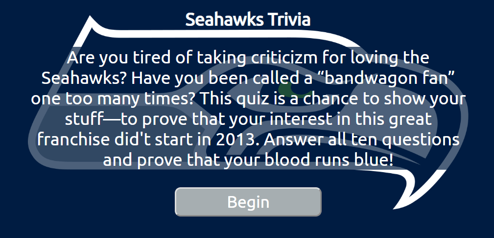

Quiz App
The following is a simple ten-question quiz about one of my favorite subjects: the Seattle Seahawks. With simple, semantic HTML, CSS, and Javascript (and some help from the jQuery library), this quiz provides the student with continuous feedback and instant bragging rights.

Live
Repo
API Hack
My brother and I engage in sports-related discussions (read: arguments) so frequently that, eventually, it just became easier for me to create a tool which would allow me to resolve disputes quickly, without sinking time into research. This app uses HTML, CSS, Javascript, and jQuery to make asynchronous calls to the NFL Fantasy API. These calls are formed using parameters provided by user input, and, upon being fetched, the returned data is modified to display the information requested by the user.

Live
Repo
I am a husband, a father, and a recent graduate of the Full Stack Web Development program at Thinkful. I love crafting the perfect user experience, and solving problems that have never been encountered before. My experience with online learning has given me a passion for creating small web applications, which I love expanding into bigger projects.
When I’m AFK, I love to spend time with my family, catch a game on TV, and go princess-rescuing on my Switch. I also enjoy making music and brushing up on French, which I speak fluently. Since becoming a dad, I’ve gotten pretty good at multitasking in my free time, but I love getting to tackle a new coding problem with undivided attention.
I graduated from Brigham Young University in December of 2018 with a major in French and a minor in Chemistry. I have been certified by the American Council on the Teaching of Foreign Languages as speaking French at a superior level. In August 2018, I received a 518 (96th percentile) on the Medical College Admission Test, but I fell in love with web design before I could finish applying to medical school. I once scored over 3600 in the google dinosaur game.
In addition to my recent training in web development, I also worked in instructional design for three years, during which time I worked extensively with several learning-specific technologies such as QTI, LaTex, and the Articulate Suite (especially Storyline). I also assisted in transitioning a course library between two different LMS's.